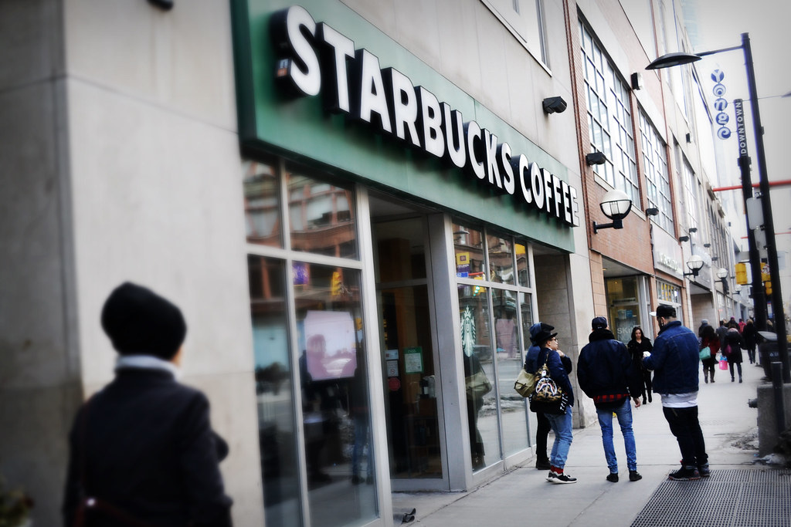

Starbucks' net income rose 36.2% to $2.5 billion, helped by the sale of its China stores

Starbucks' revenue grew 2.0% to $37.9 billion in fiscal 2026, and its operating margin rose to 9.7% from 7.9%. In the third quarter it sold a 60% stake in its China stores, which booked a $536.3 million gain and helped net income rise 36.2% to $2.5 billion. Capital spending fell 45.2% to $1.3 billion, so free cash flow rose 52.5% to $3.7 billion.
Sales grew in North America as China left the books
Revenue grew 2.0%, after 0.6% in fiscal 2024 and 2.8% in fiscal 2025. Since fiscal 2019, when revenue was $26.5 billion, it has grown at a compound rate of 5.2% a year.
Two things pulled in opposite directions. Comparable coffeehouse sales, at company-operated stores open 13 months or longer, rose 6.2%, with a 3.2% rise in transactions and a 3.0% rise in the average ticket, according to the 10-K. Against that, Starbucks no longer counts its China stores' sales as its own revenue. In the third quarter Boyu Capital bought a 60% stake in Starbucks' China retail business, and Starbucks kept 40%. Starbucks now records its share of the joint venture's profit, plus product sales and royalties. The company said the change cut company-operated store revenue by $1.5 billion.
By segment, North America revenue grew 6%, or $1.5 billion. International revenue fell 14%, or $1.1 billion, mainly because of the China change. Channel Development, which sells Starbucks coffee through grocery stores and partners, grew 16%; the company said $266 million of the increase came from the Global Coffee Alliance, driven largely by higher coffee prices.
Operating margin recovered part of its fall
Operating income rose 25.7% to $3.7 billion. The operating margin rose 1.8 points to 9.7%, but stayed below the 15.0% of fiscal 2024 and the 16.3% of fiscal 2023. The 10-K says higher sales spread costs further, while more spending on store labor under the company's "Back to Starbucks" plan worked the other way. Restructuring and impairment charges, tied to store closures and a simpler support organization, decreased by $203 million, the company said.
The China sale lifted net income, and taxes took a larger share
Net income rose 36.2% to $2.5 billion, and diluted earnings per share rose 35.6% to $2.21. Below operating income, the sale of the China stake added a pre-tax gain of $536.3 million. Taxes took a larger share of profit: the effective tax rate was 34.2%, against 25.9% in fiscal 2025. The company said the main reason was a $273 million tax charge tied to classifying the China business as held for sale in the first quarter.
Capital spending fell by almost half
Cash from operations rose 5.1% to $5.0 billion. Additions to property and equipment fell 45.2% to $1.3 billion, which the company said came from less spending on new stores and renovations in North America and China. Capital spending took 25% of operating cash flow, down from 49% in fiscal 2025. The 10-K says the company expects capital spending in fiscal 2027 to be higher than in fiscal 2026.
Free cash flow rose from $2.4 billion to $3.7 billion, or 9.8% of revenue, up from 6.6%. The $3.7 billion was still below the $4.5 billion of fiscal 2021, the highest of the eight years covered here.
China money went to paying down debt
Starbucks received net proceeds of $2.5 billion from the China sale and repaid $2.8 billion of long-term debt during the year, using part of the proceeds. Total debt fell 17.4% to $13.3 billion, from $16.1 billion. With cash and short-term investments of $3.9 billion, debt exceeded cash by $9.4 billion, against $12.6 billion a year earlier.
Property and equipment, net of depreciation, fell 18.2% to $6.9 billion. Shareholders' equity has been negative in every year covered here; at September 2026 it was minus $7.7 billion.
Dividends continued, and buybacks stayed paused
Starbucks paid $2.8 billion in dividends, up 1.9%, and bought back no shares for a second year, after $1.3 billion in fiscal 2024. Dividends took 76% of free cash flow, after 113% in fiscal 2025. In the fourth quarter the board declared a dividend of $0.63 per share. In the earnings release, the chief financial officer said Starbucks plans to resume share repurchases in fiscal 2027. The diluted share count rose 0.3% to 1,143 million, and is down 7.3% since fiscal 2019.
Eight years of figures
Starbucks does not report gross profit, so this report shows none. Fiscal 2021 had 53 weeks; the other years had 52. Cash here is cash and short-term investments; the company's own figure for cash and investments also counts long-term investments. Net income is net earnings attributable to Starbucks.
Sources: Form 10-K (SEC EDGAR) · Form 10-K filing index · EDGAR company facts for Starbucks · Starbucks fiscal 2026 fourth-quarter earnings release (Exhibit 99.1). More figures for Starbucks are on its company page.